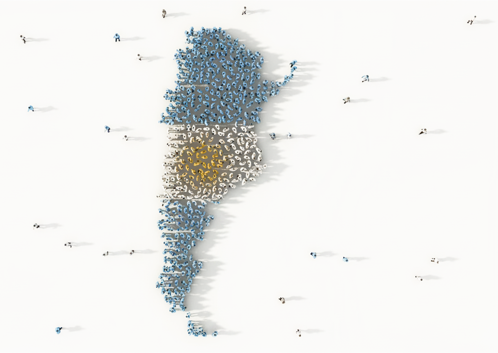

1994
María nace
Mujer.
Provincia de Buenos Aires.
Clase media.
Dos hermanos.

Una vida construida a partir de millones de datos.
Argentina tiene más de 45 millones de habitantes.
Distintas edades, provincias, trabajos, familias e historias.
A simple vista parece imposible resumir a todos los argentinos en una sola persona.
Pero siempre hay patrones.
Por ejemplo,
Entonces, si tuviéramos que imaginar un argentino promedio, probablemente tomaría mate.
Y el mate no es el único caso.
Hay edades más comunes. Nombres más frecuentes. Provincias más pobladas.
¿Qué pasaría si construyéramos una persona usando los datos más comunes?
María no existe.
Es una persona creada a partir de estadísticas.
Pero millones de argentinos comparten parte de su historia.
Mujer.
Provincia de Buenos Aires.
Clase media.
Dos hermanos.
María tiene 7 años.
Mientras cursa la primaria, Argentina atraviesa una crisis histórica.
María completa jardín, primaria y secundaria.
También descubre internet y las redes sociales.
María trabaja en educación.
Gana aproximadamente $1.010.115 por mes.
Su empleo es formal y realiza aportes jubilatorios.
María tiene 26 años.
Como millones de argentinos, vive la pandemia desde su hogar.
Fue construida usando miles de estadísticas.
Pero millones de argentinos vivieron una vida parecida.